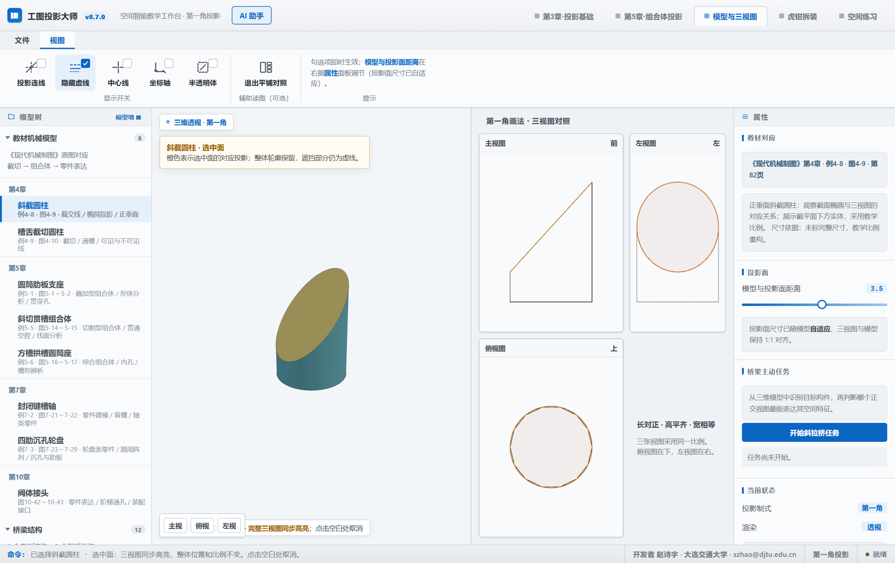

二维／三维动画
同一条蓝线，怎样从梁变成拱？
跟住同一条蓝线；讲到系杆受拉时，还能回看上一笔拱脚受力。
空间关系、加载过程和流场变化各用一种原型。点原图可以自己试。 试一道移动电荷自测题 ↗
工程制图

同一斜截面到了主、俯、左视图，为什么分别成了斜线、圆和椭圆？
点一次，实体和三个投影同时高亮。把要对照的面放在一起，减少来回找图的负担。
结构设计

工字梁跨中越压越低，受压翼缘从哪里开始起皱？
先看整梁，再停在同一加载步看局部。比较前后两帧，每次只追一处变化。
桥梁抗风

风速变了，涡从哪一侧脱落？这时圆柱往哪边振？
固定阻尼，只调风速；两幅图共用一段时间记录，把注意力留给尾涡和位移的关系。
AI 改图 在例 5-5 里保留槽长，请 AI 平移切槽刀具。先猜哪几条投影线会动，再核对拟改参数，点“应用到模型并重绘”，回到三视图量两端余量。 进入第 5 章 ↗
| 呈现形式 | 适合的场景 | 优化的认知负荷 |
|---|---|---|
| 梁到拱动画 | 两张静图都读得懂，想看清梁的上缘怎样拱起。 | 每讲完一步，右侧就留下一笔受力判断，减少瞬态信息。 |
| 电场双人对谈 | 两支电场箭头方向不同，合场会偏向哪边？ | 逐个核对分量，留出停顿，让听者解释自己的判断。 |
| 库仑扭秤短片 | 观众刚遇见扭秤，想知道那么小的力怎么量。 | 先借熟悉的推门动作理解力臂，再看长杆和细丝的配合。 |
| 巴尔的摩桥可控场景 | 讲解从船带到桥墩，观众还想绕到船的另一侧。 | 停在同一时刻再转镜头，免去追着运动的船记位置。 |
二维／三维动画
跟住同一条蓝线；讲到系杆受拉时，还能回看上一笔拱脚受力。
双人对谈
小夏和阿澈核对箭头前，可以暂停原片，先说出自己的猜想。
科普预告片
约 98 秒，从首饰秤、推门的手，一直讲到扭秤的转角。
可交互视频
跟随对话看船接近桥墩，可以暂停、转动、放大，再继续听。
 进入原场景，播放对话、转动模型 ↗
进入原场景，播放对话、转动模型 ↗